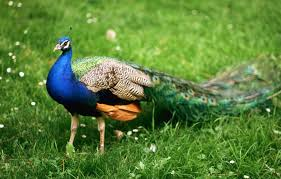

Birds, also known as Aves or avian dinosaurs, are a group of endothermic vertebrates, characterised by feathers, toothless beaked jaws, the laying of hard-shelled eggs, a high metabolic rate, a four-chambered heart, and a strong yet lightweight skeleton. Birds live worldwide and range in size from the 5 cm (2 in) bee hummingbird to the 2.75 m (9 ft) ostrich. They rank as the world's most numerically-successful class of tetrapods, with approximately ten thousand living species, more than half of these being passerines, sometimes known as perching birds. Birds have wings which are more or less developed depending on the species; the only known groups without wings are the extinct moa and elephant birds. Wings, which evolved from forelimbs, gave birds the ability to fly, although further evolution has led to the loss of flight in flightless birds, including ratites, penguins, and diverse endemic island species of birds. The digestive and respiratory systems of birds are also uniquely adapted for flight.
